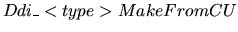
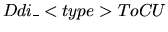

An operation may either generate a new result DDI node, or modify an existing one, following the accumulator operation style. Most operations returning scalar data are provided with both options. They gerate a new DDI node (e.g. c = Ddi_BddAnd(a,b)), or they accumulate (e.g. Ddi_BddAndAcc(a,b)) the result in the first operand, after freeing old data). Conversely, operations on array data always modify an existing DDI node (explicit calls to proper ``Alloc'' or ``Dup'' functions are required to generate new arrays). Going to operand data, whenever an operation requires data transfer to a destination DDI node, two options are available: copying or moving. In the former case, data are duplicated (new DDI nodes are generated and CUDD nodes implicitly referenced), in the latter one pointers (partitions, sub-expressions, new array entries) are copied and actually moved to a new owner DDI node.
Make is used in names to enforce creation (allocation) of new data (e.g. Ddi_BddMakeMono creates a monolitic BDD from a non monolitic one), Set is used to specify data transformation directly one the parameter (e.g. Ddi_BddSetMono transforms a non monolitic BDD to monolitic).
Manipulations on non scalar objects (e.g. arrays and partitioned BDDs) support both insert/extract and read/write operations. Insert always creates a new array slot (or partition), Extract removes the returned slot (partition), Write overwrites (and frees) an existing array slot (partition). Insert and Write always generate a duplicate of the manipulated object (so that the received parameter is still owned by the calling procedure), Extract and Read make no duplicate of the returned object (but the result of Extract is owned by the calling procedure after removal from array or partitioned BDD).
The following operators are presently supported:
DDI-CUDD conversions. Functions performing conversions between different types are named  and  (being type one of the Ddi types) are provided for conversions from/to CUDD objects. Conversions from CUDD always generate a new DDI node (with implicit node referencing), whereas their dual ...ToCU counterparts simply read CUDD node pointers (with no node referencing). Memory allocation is done only in case of arrays (e.g. Ddi_BddarrayToCU), which require a dynamically allocated array of pointers.
Management of (conjunctively and disjunctively) partitioned forms.
It must be noted that the results of all operators are implicitly referenced (unless explicitly stated in the function documentation), while explicit free-ing is required for all types.